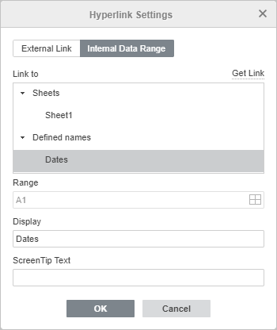

Dodavanje hiperveza
Da biste dodali hipervezu u Spreadsheet Editor-u,
- izaberite ćeliju u koju treba dodati hipervezu,
- pređite na karticu Insert na gornjoj traci sa alatkama,
- kliknite na ikonu Hyperlink na gornjoj traci sa alatkama,
- pojaviće se prozor Hyperlink Settings i moći ćete da podesite parametre hiperveze:
- Izaberite željeni tip linka:
Koristite opciju External Link i unesite URL u formatu http://www.example.com u polje Link to ako želite da dodate hipervezu koja vodi ka eksternom veb-sajtu. Ako želite da dodate hipervezu ka lokalnom fajlu, unesite URL u formatu file://path/Spreadsheet.xlsx (za Windows) ili file:///path/Spreadsheet.xlsx (za MacOS i Linux) u polje Link to.
Tip hiperveze file://path/Spreadsheet.xlsx ili file:///path/Spreadsheet.xlsx može se otvoriti samo u desktop verziji editora. U veb editoru možete samo dodati link, ali ne i otvoriti ga.

Koristite opciju Internal Data Range, izaberite radni list i opseg ćelija u poljima ispod ili prethodno dodati Named range ako želite da dodate hipervezu koja vodi ka određenom opsegu ćelija u istoj tabeli.
Takođe možete generisati eksterni link koji vodi ka određenoj ćeliji ili opsegu ćelija klikom na dugme Get Link ili korišćenjem opcije Get link to this range u kontekstnom meniju koji se pojavljuje desnim klikom na željeni opseg ćelija. Opcija Get link to this range dostupna je i u režimu pregleda.

- Display – unesite tekst koji će biti klikabilan i voditi ka veb-adresi navedenoj u gornjem polju.
Napomena: ako izabrana ćelija već sadrži podatke, oni će se automatski prikazati u ovom polju.
- ScreenTip Text – unesite tekst koji će biti prikazan u malom iskačućem prozoru kao kratka napomena ili oznaka povezana sa hipervezom.
- Izaberite željeni tip linka:
- kliknite na dugme OK.
Da biste dodali hipervezu, možete koristiti i kombinaciju tastera Ctrl+K ili kliknuti desnim tasterom miša na mesto gde treba dodati hipervezu i izabrati opciju Hyperlink iz kontekstnog menija.
Kada pređete kursorom preko dodate hiperveze, pojaviće se ScreenTip. Da biste otvorili link, kliknite na link u tabeli. Da biste izabrali ćeliju koja sadrži link bez njegovog otvaranja, kliknite i držite taster miša.
Da biste obrisali dodatu hipervezu, aktivirajte ćeliju koja sadrži hipervezu i pritisnite taster Delete, ili kliknite desnim tasterom miša na ćeliju i izaberite opciju Clear All iz padajuće liste.